clouds
· world
· duality
tempo
72
bpm
choir
3
5
7
9
routine
auto
arc · wave
line · arc · line
v · line · wave
sky
sunset
dusk
day
lead
none
right φ
left φ
center
play
piece (a cappella)
mouse
keys
voice (mic)
auto routine
auto-cue
seed
new
ep09
toy piano
tape
halo
parallax
key bg
cue
flying
export png
sound off
voices
ensemble (piano · meow · bass)
piano (ep09)
toy piano
tape vox
meow
bass
hey!
toddler ow
bulgarian choir
mixed (alternating)
elevenlabs
synth
regen
music
elevenlabs
synth organ
off
recompose
link
room
connect
influence
none
· beat
0
·
idle
·
♪ off
·
♫ off
·
⟷ off
drop angel frames
one png, or several poses of the same figure · click to pick
